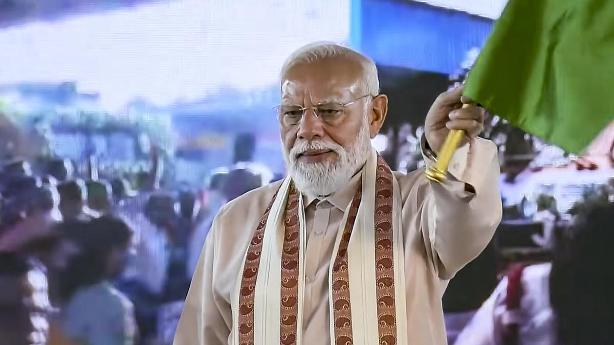

TRICHY: Prime Minister Narendra Modi Wednesday positioned
NDA as a credible alternative to Dravida Munnetra Kazhagam in Tamil Nadu
and called upon the people to support the alliance to bring transparent
governance and faster development to the state. Speaking at the NDA rally
in Trichy, Modi said the upcoming election was the most important election
in Tamil Nadu's history. "The choice before the people is clear. One path
leads to dynasty politics and corruption. The other path leads to
development, opportunity and honest governance," he said. Modi said "the
desire for change is gaining huge momentum. The whole state has made up
its mind to throw out DMK govt. People want a govt for every family, not
for just one family, and they know only NDA can bring that change."
